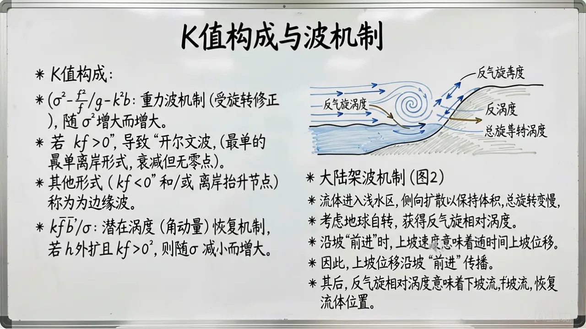

“沿着大陆架传播，并在离岸方向迅速衰减的低频海洋波动。”
Learning dashboard
今天从哪里开始？
不需要从头滚到尾。选择一个学习入口，每个模块只在需要时展开；完成后用出门票把知识写回自己的长期记忆。
Story · Core concept
沿岸俘获波
Coastally Trapped Waves，简称 CTWs。它们受海岸边界、地球自转和大陆架地形共同约束，主要沿海岸方向传播，可表现为沿岸水位、流速和温度的低频变化。
图示核心范围约为一周至一个月，具体尺度取决于激发机制、地形和层结。
能量沿岸传播，离岸结构受陆架宽度、坡度和变形半径控制。
Scale matters
三个相邻但不同的概念
“海面有起伏”并不意味着它们都属于通常所说的表面波。区分时间尺度、空间尺度和主要控制机制，才能为数据采样和模型设计选择合适的目标。
Surface gravity waves
表面重力波
研究量：有效波高、周期和波向。通常对应风浪与涌浪，是近岸海浪预测的直接对象。
Surface tides
表面潮汐
研究量：潮位和潮流。天文潮可通过分潮进行调和分析与预报。
Coastally trapped waves
沿岸俘获波
研究量：沿岸低频水位与流速异常。CTWs 不等同于风浪，也不等同于天文潮。
Story · Watch & read
视频与 19 页课件
视频用于快速建立直观认识，课件继续展开控制方程、模态结构、层结与摩擦效应；两者共同组成沿岸俘获波 Story 的学习材料。

Coastal Trapped Waves
1 / 19在线预览为图片形式；轻量 PPTX 保留全部 19 页视觉内容，不含内嵌旁白。
下载轻量版 PPTXCourse questions
上层海洋与海气热收支
以下内容对应课件中的 9 个问题。答案先给可直接复述的结论，再说明物理原因、数量级与限定条件。
统一约定热通量以“进入海洋为正”，单位为 W m⁻²。表中数值是全球海洋年平均气候态的代表范围，而不是固定常数；不同产品、时期和季节会改变极值，冬季天气过程的瞬时通量可远超年平均。
混合层、温盐结构与温跃层
Upper-ocean structure · Questions 1–7
1How deep is a typical mixed layer if mixed by wind? How deep can it reach if driven by cooling?风混合层通常多深？冷却驱动时可达到多深？
简答：风和波浪维持的混合层通常为数十米，常见约 25–100 m，全球定义和观测中常落在 25–200 m。冬季表面失热造成对流混合时可加深到数百米；在拉布拉多海、北欧海和南大洋等深对流区，极端情况下可超过 1000 m。
混合层深度必须附带判据，例如相对 10 m 的温度差或密度差阈值。东海陆架还受水深限制，浅海中可直接混合至海底。
2Typical vertical temperature and salinity profiles in subtropical and subpolar North Pacific?北太平洋副热带与副极地海区的典型温盐剖面有何不同？
副热带环流区表层暖且偏咸；下方存在清晰、较深的永久温跃层，温度随深度快速降低。蒸发占优形成上层盐度极大，向下通常转为较淡的中层水。密度跃层主要受温度控制。
副极地环流区表层冷且偏淡；永久温跃层较弱，季节温跃层冬季可被侵蚀。降水、融冰和径流使表层低盐，盐度通常随深度增加，盐跃层对密度分层更重要，并可能出现温度逆温。
北太平洋中层约数百米还常见北太平洋中层水的盐度极小；实际剖面随季节、经度和水团路径变化。
3What are the dominant regions of net evaporation in the ocean?海洋中净蒸发占优的主要区域在哪里？
主要位于约 15°–35° 的副热带高压带和副热带环流区，其中副热带北大西洋、南大西洋最明显，北太平洋和南太平洋副热带也为净蒸发区；地中海、红海和阿拉伯海等干燥海域尤其突出。相反，ITCZ、季风强降水区以及许多高纬海区通常降水大于蒸发。
控制量是淡水收支 E − P（必要时还要加入河流与融冰）。副热带下沉气流少云少雨、湿度低并伴随信风，因此蒸发增强。
4What are the key components of the mixed-layer heat budget?混合层热收支包括哪些关键项？
核心项包括：海表净热通量、水平平流、混合层底的卷入/脱离、垂向湍混合与扩散，以及穿透到混合层底以下的短波辐射。锋面和涡旋区还应保留次网格或涡旋热输送。
∂Tm/∂t = [Qnet − Qpen(−h)]/(ρ₀cph) − um·∇Tm − weΔT/h + mixing + residual
其中 Qnet = Qs + Qb + Qe + Qh。必须同时说明混合层深度 h、卷入速度 we 和通量符号约定。
5Is the North Atlantic saltier or fresher on average than the Pacific? Why?北大西洋平均比太平洋更咸还是更淡？为什么？
北大西洋平均更咸。主要原因是大西洋的蒸发相对降水更强，且大气把水汽从大西洋跨越中美洲和非洲输送到太平洋与印度洋，留下较高盐度；地中海高盐出流水也会抬高北大西洋中层盐度。较高盐度有利于北大西洋高纬水体增密和深水形成。
6Where is summer-to-winter contrast large, and where is seasonal variability weakest?哪些海区夏冬差异最大？哪些区域季节变化最小？
最大：中高纬海区，尤其西边界流延伸体、季风海区和部分边缘海。这里太阳辐射和风暴活动季节变化大，夏季浅而暖、冬季深而冷。
最小：低纬暖池和赤道附近开阔海域的年循环通常较弱；深层海洋季节变化更小。但赤道冷舌、上升流区和季风控制区是低纬例外。
7Describe the two processes that maintain the thermocline.维持温跃层的两个主要过程是什么？
① 风驱通风与俯冲：表层水在等密度面露头区获得温盐性质，随后在副热带 Ekman 辐合和下沉作用下沿等密度面进入海洋内部；平流把表面浮力强迫形成的暖、轻水体结构输送到主温跃层。
② 上升流—跨密度扩散平衡：内部湍混合把热量缓慢向下扩散，同时大尺度上升流把冷的深层水向上输送，两者共同维持温跃层的有限厚度和垂向温度梯度。
这两项分别对应“通风温跃层”和“扩散温跃层”的经典解释；真实海洋中二者并存，表面加热/冷却提供浮力边界条件。
海气热通量四分量
Air–sea heat flux · Qs, Qb, Qe and Qh
8What factors determine Qs, Qb, Qe and Qh?四个热收支分量分别由什么因素决定？
- Qs 净短波辐射：太阳高度角（纬度、季节、时刻）是第一控制量；云量与云光学厚度通常决定天气尺度变化，气溶胶、水面反照率和海冰也会调节吸收量。
- Qb 净长波辐射：海表温度通过 σT⁴ 控制海面发射；近海面气温、水汽和云决定大气向下长波。暖而干、少云时海洋长波失热更强。
- Qe 潜热通量：近似与 U[qs(SST)−qa] 成正比。风速和海气湿度差最关键，SST 通过饱和比湿指数式地影响蒸发，大气稳定度和交换系数也重要。
- Qh 感热通量：近似与 U(SST−Ta) 成正比。主要由风速、海气温差和稳定度控制；冷干空气越过暖流时最强。
Qe ≈ −ρaLvCEU(qs−qa) Qh ≈ −ρacpaCHU(SST−Ta)
9What are the magnitude ranges and typical extrema of the four terms?四个分量的典型量级、最大与最小中心在哪里？
下表采用进入海洋为正，给出代表性的年平均气候态范围。若课件使用“向上为正”，Qb、Qe 和 Qh 的符号需要整体反转。
| 分量 | 典型年平均范围 | 最强中心 | 最弱中心 |
|---|---|---|---|
| Qs | 约 +40～+300 | 低纬、少云的热带—副热带海洋，约 +250～+300 | 季节性海冰区和高纬冬季，年平均常低于 +50 |
| Qb | 约 −20～−110 | 最强失热位于暖、干、少云的副热带海域，约 −80～−110 | 湿润多云的 ITCZ 或寒冷高纬，约 −20～−50 |
| Qe | 约 0～−250 | 湾流、黑潮及干燥强风海域，约 −150～−250；冬季月平均可超过 −300 | ITCZ、弱风湿润区和海冰区，接近 0～−30 |
| Qh | 约 +10～−80 | 湾流和黑潮冬季冷空气爆发区，年平均约 −40～−80，天气尺度可低于 −100 | 冷舌或沿岸上升流上空暖空气平流区，可接近 0 或略为正 |
“极值中心与数值”不是普适常数。精确作答应注明数据集（如 OAFlux、ERA5 或 NOC）、平均时段、网格分辨率及海冰掩膜；西边界流的粗网格产品往往低估峰值。
Knowledge atlas
物理海洋学框架
脑图被整理成可阅读的专题目录。选择左侧主题，可查看核心概念以及它与东海近岸研究的联系。
Textbook figure guide
教材图解
把合成截图中的每一幅图拆开解释。当前已整理 33 幅，覆盖海盆地形、海水物性与全球温盐密度结构；点击图片可查看原始截图。
图源：Talley 等《Descriptive Physical Oceanography: An Introduction》第六版及课程截图。下方文字为学习性释义，不替代原书图注；公开使用时请保留书目信息并注意版权范围。
Method laboratory
经典分析方法与可复现实验
先用物理可解释的经典方法提取潮汐分量和主导时空模态，再把结果作为深度学习的基线、特征或残差目标。下面的程序、数据和工具均可直接下载。
Tidal harmonic analysisMATLAB
T_TIDE 潮汐调和分析
把连续水位序列表示为多个已知天文频率的正弦分量之和，估计每个分潮的振幅和相位，并将重建潮位与非潮残差分离。
η(t) = Z₀ + Σ Ak cos(ωkt − φk) + r(t)
- 一年记录有利于分离频率接近的分潮；短记录的可分辨分潮更少。
- 保留缺测为 NaN，不用长间隔插值制造虚假周期；分析前核查异常值和时间轴。
- 输出可作为潮位预测基线；残差适合进一步研究风暴增水或训练深度学习模型。
查看核心程序
[nameu,fu,tidecon,xout] = t_tide(waterLevel, ...
'interval',1,'start time',startTime, ...
'latitude',21.30669,'output','screen');
residual = waterLevel - xout;学习路线先看中文示例，再运行本站程序
B站图文教程逐项解释 interval、latitude、start time、TIDECON 与 XOUT；南京大学讲座补充调和分析原理与应用。
Empirical orthogonal functionPython
EOF 经验正交分解
把去季节、去趋势后的海洋时空异常场分解为正交空间模态 EOF 与对应时间系数 PC，按方差贡献率识别主导变化结构。
X(time, space) = UΣVᵀ variance fractionk = σk² / Σσ²
- 示例用 SVD 得到 EOF1 和 PC1，第一模态通常呈现 ENSO 相关的热带太平洋型态。
- EOF 的正负号任意，程序用 Niño‑3.4 区域的空间均值统一符号，便于复现比较。
- EOF 是统计模态，不自动等于单一动力过程；解释时应结合海温、风场和海表高度等证据。
查看核心程序
weighted = (anom * np.sqrt(np.cos(np.deg2rad(anom.lat))))
X = weighted.stack(space=('lat','lon')).dropna('space')
U, s, Vt = np.linalg.svd(X.values, full_matrices=False)运行环境：T_TIDE 示例需要 MATLAB 与 T_TIDE 工具箱；EOF 示例需要 Python 3，以及
numpy、xarray、netCDF4 和 matplotlib。程序使用固定分析时段，避免数据持续更新导致结果漂移。EOF visual laboratory
从空间模态到时间系数
参考经典 EOF 展示的阅读顺序，把空间型、主成分和方差贡献放在同一工作台。下图是可交互的教学示意，不是 ERSSTv5 的计算结果；正式分析请运行上方 Python 程序。
01 · 空间载荷
教学示意EOF 空间模态
第一模态强调赤道中东太平洋的盆地尺度变化，可用于建立 ENSO 型空间结构的直觉。
02 · 时间系数
均值 0 · 标准差 1PC 标准化时间序列
拖动位相会同步改变左侧空间异常的强度与符号；EOF 与 PC 同时反号不会改变重建场。
03 · 方差贡献
阅读顺序
- 先确认异常场、分析区域和面积权重；
- 再读空间型及其对应 PC；
- 最后检查方差贡献、模态可分离性与物理证据。
FIVE QUESTIONS · AUTO SCROLL
EOF 五问五答
01 / 05
每 8 秒自动切换；悬停、聚焦或使用键盘时暂停。
数据练习来源：NOAA ERSSTv5 月平均海表温度；本交互仅演示 EOF 的结构与阅读方法，不显示未经本站程序计算验证的统计数值。
Visual thinking lab
RAWGraphs 学习模块
把分析结果从“数据表”变成“可讨论的图”。选择一个海洋学示例，按四步完成字段映射；示例只演示表达方式，不代替正式统计检验。
学习进度0 / 4
Retrieval practice
出门票
离开页面前，用 3–5 分钟回答一题。先写自己的答案，再查看核对要点；回答记录只保存在当前浏览器，不会上传。
写完了，查看核对要点
Research workflow
东海近岸研究路径
围绕海浪与潮位预测，将观测资料、动力机制和数据驱动方法放在同一条分析链上。深度学习模型的采样间隔与预报时长应匹配目标过程的物理尺度。
01
明确目标变量
区分有效波高、天文潮位、风暴增水和沿岸低频水位异常。
02
组织多源观测
整合潮位站、浮标、风场、气压、流速和海底地形等资料。
03
建立物理基线
先分析潮汐周期、传播时滞和天气尺度响应，再训练数据模型。
04
开展时空预测
根据站点关系和空间网格选择时序网络、图网络或 Transformer。